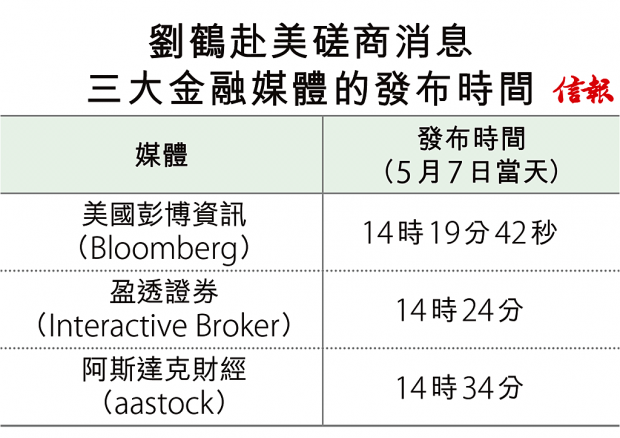

美國總統特朗普本月5日於Twitter發文宣布，將在5天後（即10日）開始對價值2000億美元的中國商品提高關稅率，從10%升至25%。加徵關稅的決定發表後，不少媒體都揣測，率領中國代表團參與貿易談判的副總理劉鶴有可能不參加原定上周三（8日）在華盛頓召開的談判。到上周一（6日），亞太股市的「黑色星期一」便出現了，當天中港股市均大幅下滑，滬深300指數創3年多以來最大跌幅，達5.84%；另一方面，恒指也錄得15個月來最大跌幅2.9%。
重磅消息與價格發現
但上周二（7日）中國商務部確認劉鶴於5月9日至10日赴華盛頓，就經貿問題和美國官員進行第十一輪磋商。消息一出，恒指期貨價格開始回升。在此列出3家財經資訊媒體發布這消息的時間【表】，它們都是投資者最常用且甚為普及的媒體，人們往往會參考其新聞資訊作出交易決定。就劉鶴赴美進行經貿磋商的消息，3家媒體的發布時間有一定差距。
從最早的發布時間（本月7日14時19分42秒）開始，在14時19分30秒至14時20分30秒這一分鐘內，恒指期貨的價格和成交量突然大幅上升，其後，恒指期貨價格繼續上揚，成交張數維持高企，在短短5分鐘內，在第二個媒體作出報道時，飆升了120多點。之後走勢仍受這個好消息帶動，終完成了近200點的升幅。當第三個媒體作出報道時，升勢基本上已經結束。
這是一個典型的價格發現（price discovery）過程。因消息傳播不一定那麼即時，投資者也需要時間消化消息，故價格的上升並不會一步到位，而是拾級而上。到了消息威力出盡以後，升幅也就無以為繼，慢慢向下走。行為財務學者以under-and-over-reaction來形容此類走勢──投資者先是反應不足或不夠敏捷，造成了步步高升的走勢，但熱潮很容易過猶不及，過度反應就埋下以後低走的伏筆。
自2016年起，人工智能（AI）技術大爆發，AlphaGo殺退各地圍棋國手，技驚四座，以AI運算法操盤的投資交易也開始出現。近20年間，從最早的網頁資料勘探（Web Data Mining）、文字探勘（Text Mining），慢慢演進到近10年討論的情緒探勘（Sentiment Analysis）與意見探勘（Opinion Mining），再到最近兩年的情緒分析系統（Sentiment Analysis System），這些方法的重點都是嘗試從大量文字中，辨識出正面與負面等情緒。在投資角度而言，若多方面的消息顯示市場情緒由正面轉為負面或持續正面，這可能是一個買入機會；相信利用這些技術來炒賣恒指期貨者亦為數不少。
在劉鶴赴美會談這一例子裏，可見準確地分析文字內容對炒賣期貨的重要性，因為他成行與否，對金融市場有巨大影響力，準確掌握這個資訊，對炒家來說會是一個非常有潛力的短炒機會。
1分鐘內或獲利200萬
但單純的文字分析，在現今的金融市場並不足夠，速度是炒賣期貨的決勝之道。上述例子看到，美國彭博資訊發布消息的時間比另兩家媒體快約4分鐘和14分鐘。以恒指期貨每秒的高低價來看，早在彭博發布時間5秒前（即在14時19分37秒的那一秒內），大期已由最低28956點升至28973點，成交量達90張，發布消息前的5秒內，已有近200張的成交，由此可推論，有人在彭博公布這則資訊前已掌握有關情況，這200張的期指買家在消息公布後短短一分鐘內，每張期指可獲利100點，如能掌握under-and-over-reaction的道理，更可每張獲利200點，總利潤達200萬元。
若投資者是用彭博終端的話，或許可以把握機會立即買入期貨。但對一般投資者而言，主要接收財經資訊的渠道可能是阿斯達克或經濟通等網站，它們發布資訊的時間較遲，投資者未必能藉消息進行順勢交易獲利，更有可能因市場過度反應後回調導致損失。就算投資者接收資訊上沒太大延遲，亦要靠機器的輔助來迅速提交買盤，單靠人手下單已太慢，唯有用演算交易法（algorithmic trading），在取得訊號後立即由電腦提交買盤，才能坐上這班順風車。
金融市場受資訊科技的發展所帶動，近年人工智能及數據挖掘的技術，更成熟地融入交易，使市場競爭變得更激烈，散戶要從中獲利亦愈趨困難。
參考資料︰
http://dataology.blogspot.com/2015/04/sentiment-analysis.html
https://towardsdatascience.com/https-towardsdatascience-com-algorithmic-trading-using-sentiment-analysis-on-news-articles-83db77966704
陸俊杰為金融交易員
鄒小敏為理工大學專業進修學院客席講師
林建教授為香港浸會大學榮休教授兼香港大學統計精算學系榮譽教授
Article from HKEJ Source